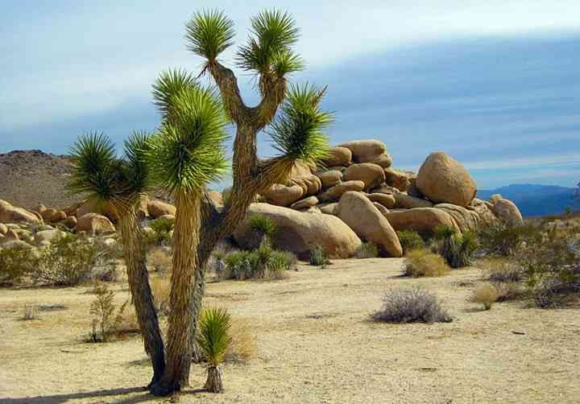
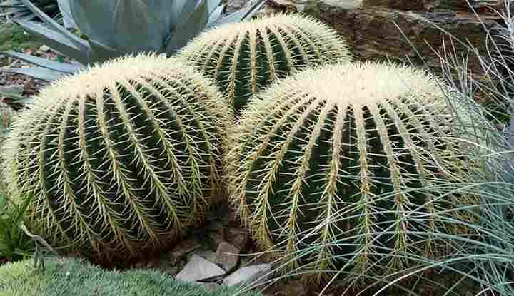
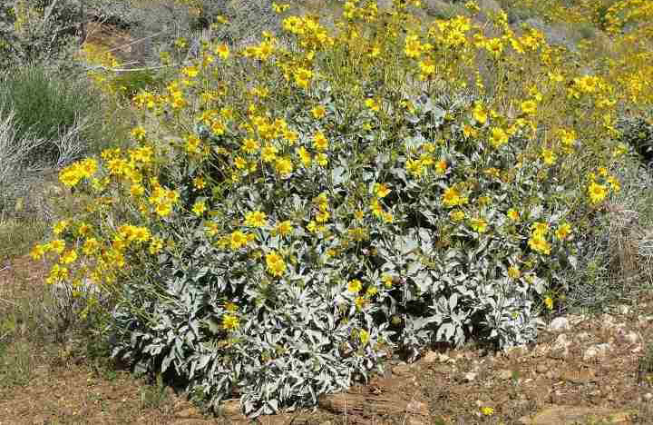
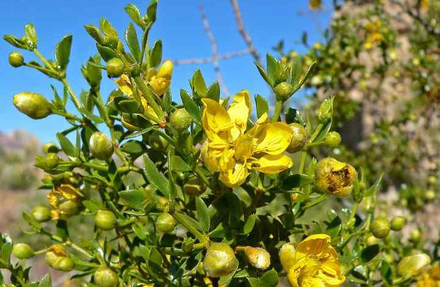
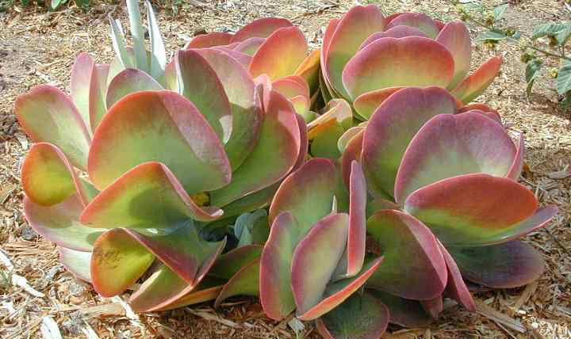
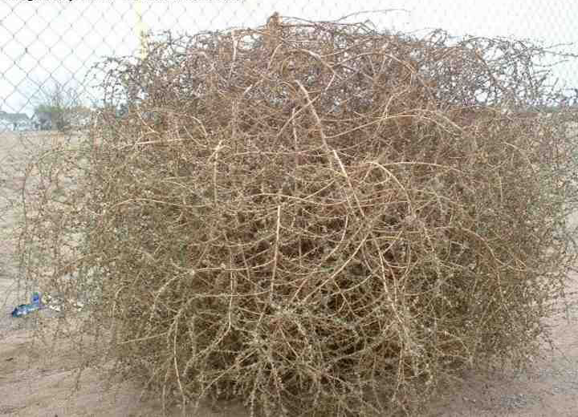
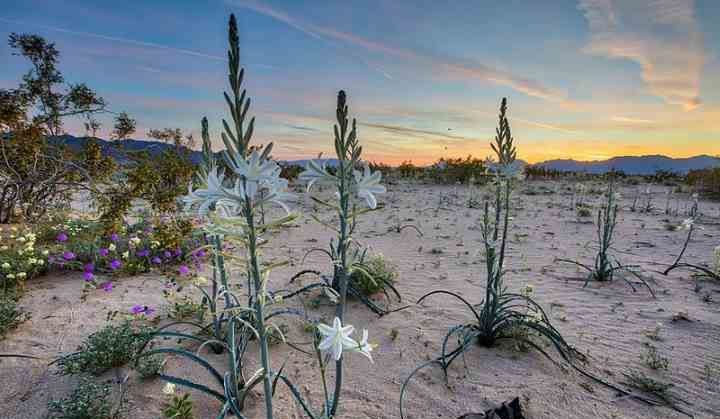
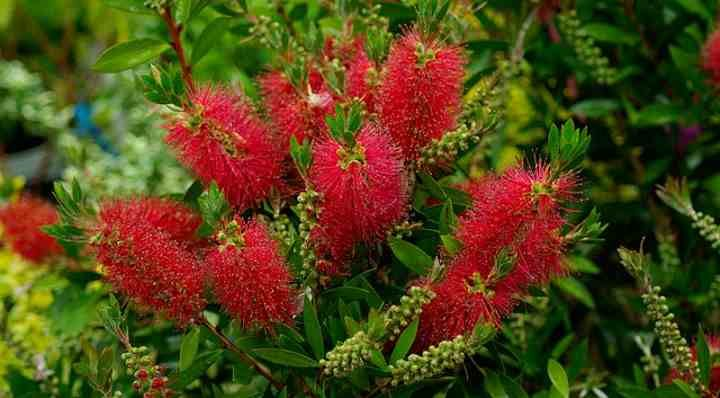
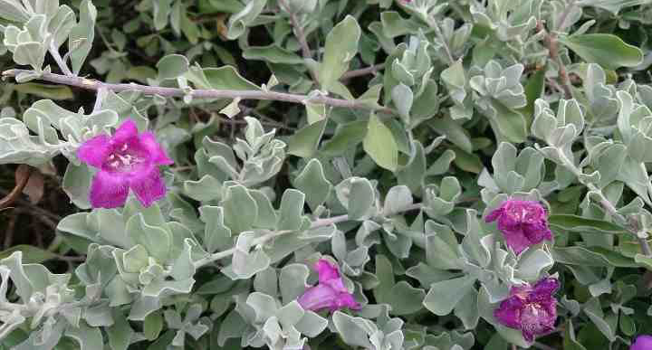

约书亚树，学名为短叶丝兰（Yucca brevifolia），是百合科丝兰属的单子叶植物。在莫哈威沙漠中生长。这种耐旱的树状沙漠植物也有丝兰棕榈和棕榈树丝兰等名称。 这款大型的、喜欢太阳的植物原产于亚利桑那州、犹他州、加利福尼亚州和内华达州，最高可生长到15米（50英尺）。 生长缓慢的树可能要花很多年才能达到这个高度。
植物

保护森林，保护家园。
约书亚树

加快造林绿化，改善生态条件。
金桶仙人掌
金黄色的桶形仙人掌看起来像一个球形的尖球形地球仪。圆形的绿色仙人掌有黄色或白色的尖刺，植物产生黄色小花冠。 这些强壮的沙漠植物在充满阳光和炎热，干旱的条件下，是岩石花园或沙漠景观的绝妙补充。桶装仙人掌是生长缓慢的植物， 可以生存长达30年。球形低生长植物最终可能会达到3英尺（1 m）高。由于栖息地遭到破坏，这些仙人掌在沙漠中很少见。 但是，它们是在院子里生长的优良标本植物。你可以把它们种在沙地上 排水良好的土壤 在你的院子里或在花盆里种。

建设森林城市，改善生态环境。
刺柏
Brittlebush是南部各州和墨西哥最常见的沙漠灌木之一。顾名思义，刺柏的茎干很硬，很容易折断。 这种低矮的灌木丛在开花时有助于照亮沙漠景观。黄色花会在一小团干燥的树叶中绽放。在干旱季节，浓密的植物失去叶子， 依靠茎中储存的水分来抵抗沙漠的炎热气候。

善待自然也便是人类自珍自重。
杂酚丛
这种沙漠植物也被称为油木，是干旱沙漠原生的强壮植物的开花物种。常绿灌木产生黄色的花朵， 其大根系吸收了沙漠土壤深处的水分。这种浓密的沙漠植物因其闻到从煤焦油中蒸馏出的杂酚油化合物的气味而得名。 成熟的杂酚丛生灌木植物可以在高达160°F（70°C）的温度下生存，并且可以承受极端干旱。

保护环境，功在当代，利在千秋。
红煎饼
这种小型的居住于沙漠的植物的通用名称主要描述了这种多汁的叶子，包括红煎饼，桨叶植物，沙漠白菜和烙饼。 大而圆的肉质叶子为蓝绿色，边缘有淡红色的迹象。沙漠多肉植物产生黄色蜡状花朵。在阳光充足的花园中， 这些低水位的沙漠植物不需要太多维护。烈日可以帮助树叶保持颜色，而肉质的树叶可以保持水分。

保护自然平衡，拯救绿色环境。
风滚草
风滚草滚过荒芜的沙漠道路的图片是狂野西部电影的经典影像。风滚草由许多不同类型的沙漠植物形成。 轻干杂草球是从根系脱离的整个植物。它的另一个俗名是俄罗斯蓟，表示它原产于俄罗斯以及美国西部。 当植物吹过荒芜的沙漠景观时，它会散播种子，以帮助这种入侵植物繁殖。

搞好水土保护，改善生态环境。
沙漠百合
不仅可以忍受仙人掌和多肉植物，还可以在炎热的沙漠天气中生存。沙漠百合是西南和墨西哥常见的沙漠植物。 姓氏表明该耐热植物不是真百合，但这与龙舌兰植物有关。但是，蓝灰色的植物会产生大型的白色百合花状的花， 因此俗称“沙漠百合”。这些仅生活在沙漠中的大型植物可以长到6英尺（1.8 m）高。

森林是地球的肺，我们要保护森林。
洗瓶刷
洗瓶植物在炎热，充满阳光的环境下壮成长，可以忍受最少的浇水。这些小灌木丛原产于澳大利亚，那里有各种气候， 包括沙漠地区。这些沙漠植物有五颜六色的红色花朵，与浅绿色的针状叶子形成鲜明对比。查看它的花朵图片， 很容易看到它的俗称。花长成瓶刷的形状。

人与自然需要和谐共处。
德州圣人
德州鼠尾草体积小巧且产生紫色花朵的灌木。这种居住在灌木丛中的灌木的其他名称是野生紫丁香，烟灰灌木， 德克萨斯银叶和紫色鼠尾草。尽管有通用名：德州圣人 ，开花植物与草本鼠尾草无关。